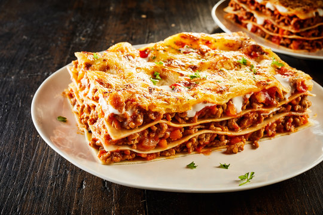

Description
This classic lasagna is made with layers of tender pasta, rich meat sauce, creamy ricotta, and melted mozzarella. It's hearty, satisfying, and perfect for family gatherings.
Ingredients
- 12 lasagna noodles
- 1 lb ground beef
- 24 oz marinara sauce
- 15 oz ricotta cheese
- 3 cups shredded mozzarella
- ½ cup grated Parmesan
- 2 cloves garlic, minced
- Salt and pepper to taste
Steps
- Preheat oven to 375°F (190°C).
- Cook noodles according to package directions; drain.
- In a skillet, brown the ground beef with garlic; add marinara sauce and simmer 5 minutes.
- Spread a thin layer of sauce in a 9×13 inch baking dish.
- Layer: noodles → ricotta → sauce → mozzarella. Repeat layers twice.
- Top with remaining mozzarella and Parmesan.
- Cover with foil and bake 25 minutes. Remove foil; bake another 15 minutes until bubbly and golden.
- Let rest 10 minutes before serving. Enjoy!